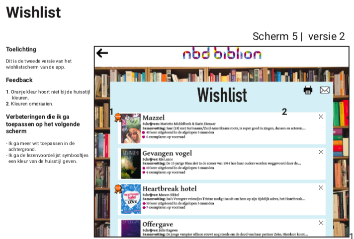
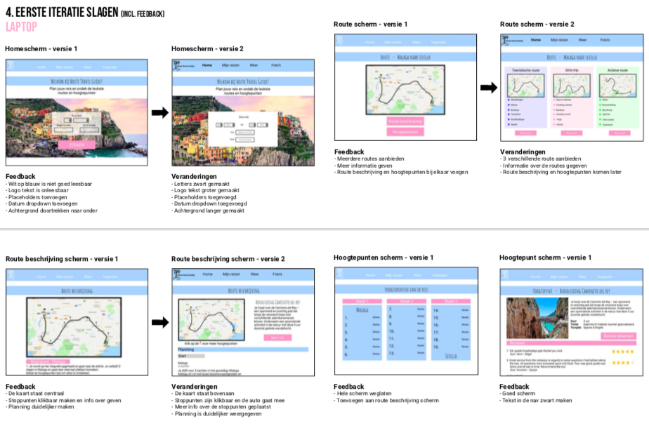

Evalueren
CMD'ers zijn in staat resultaten, die tijdens verschillende stadia van het ontwerpproces ontstaan, herhaaldelijk te toetsen op hun waarde en belang voor de wensen van de gebruiker/opdrachtgever.
Voorbeelden
VID - Iteraties

Project Web - Iteraties
